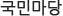

주메뉴 바로가기
본문 바로가기
주메뉴

메인비주얼입니다.
비전전략
중점사업
사업지역
사업형태
검색,리더소개,미니비주얼이있는부분입니다.
검색어찾기
검색어를 입력해주세요
미니비주얼부분입니다.
공지사항
[창의적 가치창출 프로그램] 2015 CTS 프로그램 공모 안내자료 (참여안내서, 발표집, 발표자료)
15.07.23
2015년 전국 초중고 “차세대 ODA리더 개발교육” 참가 동아리 모집 안내
15.07.22
2016년 민관협력 공모사업 심사일정 안내
15.07.22
『2015년 영월국제 발물관 포럼』
15.07.20
제14차 세계한상대회
15.07.17
[합격자발표] 제1기 보건교육프로그램 및 국제개발직 코이카봉사단 국교육 대상자를 발표
15.07.16
몽공 울란바타르시 도시폐기물 처리시설 정비사업 사후관리용역 업체 선정
15.07.23
[사전규격공고] 필리핀, 동티모르 보건의료기자재 공급업체 선정
15.07.22
[국제](재공고) 몽골 한몽기술대학교 역량강화사업 기자재 공급업체 선정
15.07.22
『베트남 한베 과학기술연구원(V-KIST) 설립지원사업 건설사업관리(C...
15.07.20
(정정공고) 사회적 경제 접근법을 활용한 민간협력사업 혁신 방안 연구용...
15.07.17
월드프렌즈 코이카봉사단 영어교육 위탁
15.07.16
코이카 우간다 사무소, 유니세프와 함께 모자보건 강화사업 착수식 개...
15.07.23
코이카 솔로몬군도사무소, 산림관리 연구센터 착공식 개최
15.07.22
코이카-함께일하는재단, 개도국에 적합한 비지니스 모델 확산을 위해 노...
15.07.22
코이카, NH농협금융 노하우 개도국 진출 도와
15.07.20
코이카, 지속가능개발목표(SDGs) 논의를 위한 ‘제27회 개발협력포...
15.07.17
해외현장활동을 통한 ODA지식 쑥쑥!
15.07.16
[국내] 주요 국내 기사 (2015.07.23)
15.07.23
[국내] 주요 국내 기사 (2015.07.22)
15.07.22
[국내] 주요 국내 기사 (2015.07.21)
15.07.21
[국내] 주요 국내 기사 (2015.07.20)
15.07.20
[국내] 주요 국내 기사 (2015.07.17)
15.07.17
[국내] 주요 국내 기사 (2015.07.16)
15.07.16
[기고] 월간교통, 공적개발원조(ODA)와 교통물류산업의 해외진출
15.07.23
[인터뷰]”김영목 코이카 이사장, 개도국 교육 원조 왜 필요한가?”
15.07.22
[인터뷰] 세계일보 (세계초대석), “한·중·일 젊이이들 같이 할 수 ...
15.07.22
[방송] SBS CNBC, 제프리 삭스-김영목 이사장, 지속 가능한 ...
15.07.20
[인터뷰] SBS CNBC Korea Report
15.07.17
[기고] 아시아투데이, 코이카, 개도국 교육에 크게 이바지
15.07.16
제 13기 월드프렌즈 KOICA자문단(World Friends Advisors) 모집
15.07.23
KOICA 우간다 새마을운동 시범마을 건립사업
15.07.22
한국국제협력단(KOICA) 부산 지역센터 소장 모집
15.07.22
KOICA 기간제근로자 모집(사무직~7.26)
15.07.20
KOICA 기간제근로자 모집(전문직 및 사무직~7.22)
15.07.17
「에티오피아 재해경감을 위한 기상관측 및 조기경보시스템 구축사업」 현지 프로젝트 관리자 채용 공고
15.07.16
KOICA 헤드라인
코이카-함께일하는재단, 개도국에 적합한 비즈니스 모델 확산을 위해 노력
코이카, NH농협금융 노하우 개도국 진출 도와
코이카, 2015년 상반기 조달계약옴부즈만 회의 개최
코이카 우간다 사무소, 유니세프와 함께 모자보건 강화 사업 착수식 개최
코이카 솔로몬군도사무소, 산림관리 연구센터 착공식 개최
코이카, 아시아재단과 협력해 캄보디아 현지 사업효과성 증진
KOICA 아카이브
지속가능개발목표(SDGs) 수립현황과 대응방안
KOICA 프로젝트형 사업 위험관리방안 연구 보고서
[발표자료] 제27회 개발협력포럼 발표자료
[발표자료] 제26회 개발협력포럼 발표자료
ODA 정책연구회
Health & ODA
배너